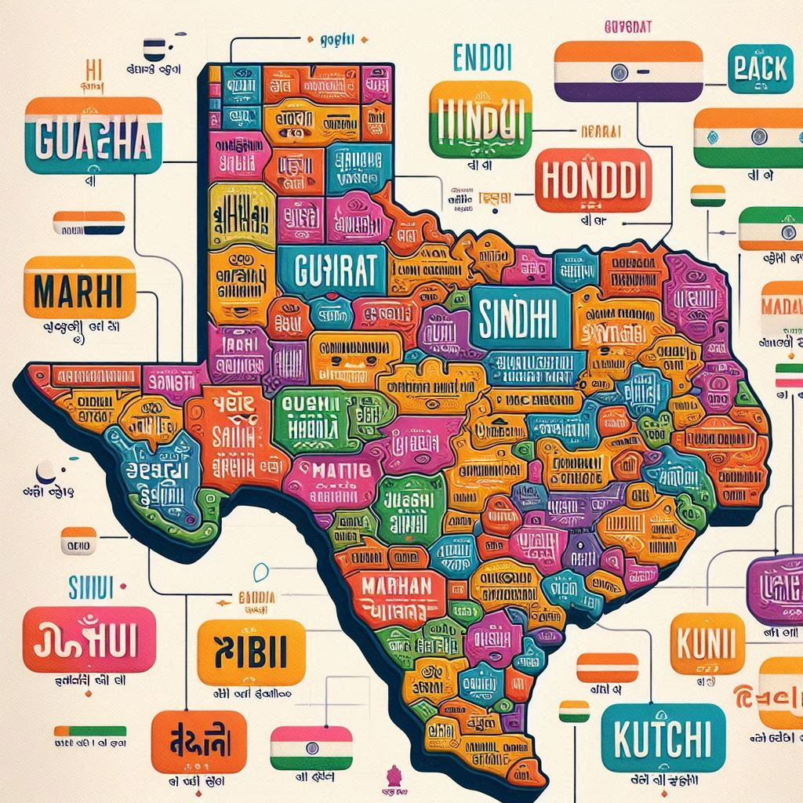
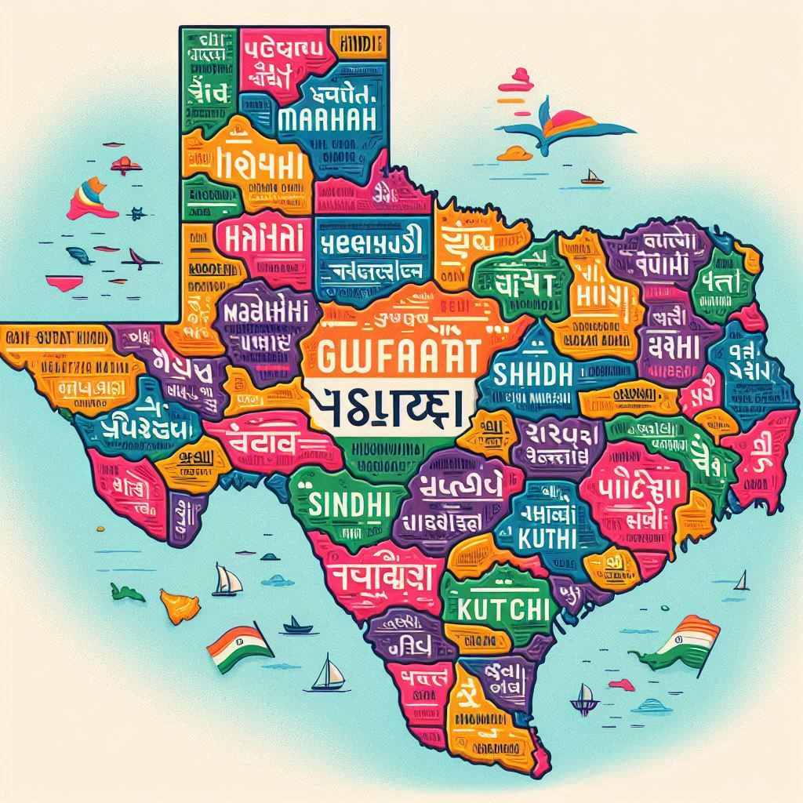

Gujarat has a rich linguistic heritage, reflecting its diverse cultural and historical influences. The state’s primary language is
Gujarati, but there are several other languages spoken by different communities and ethnic groups, showcasing Gujarat’s multicultural character.
1. Gujarati Language
- Official Language: Gujarati is the official and most widely spoken language of the state. It belongs to the Indo-Aryan family of languages and is spoken by the majority of Gujarat's population.
- Dialects: There are several dialects of Gujarati spoken across different regions, such as Kathiawari, Surti, Charotari, and Kutchi. The dialects differ in pronunciation, vocabulary, and some grammatical features. Kutchi is a popular dialect spoken in the Kutch region and has words influenced by Sindhi, Gujarati, and even Persian and Arabic.
- Literary Heritage: Gujarati has a rich literary tradition, with notable poets and writers like Narsinh Mehta, Akho, Premanand, and modern writers like Umashankar Joshi and Jhaverchand Meghani. The language is known for its folk songs, bhajans (devotional songs), and modern literature.
2. Hindi
- Second Language: Hindi is widely spoken and understood in Gujarat, especially in urban areas. It is used in educational institutions, government offices, and media. Many people are bilingual in Gujarati and Hindi.
3. English
- Usage: English is commonly used as a medium of instruction in schools, for business and administrative purposes, and among professionals. Gujarat, being an industrial and trade hub, uses English extensively in commerce and communication.
4. Sindhi
- Minority Language: The Sindhi community, which migrated to Gujarat from Sindh (now in Pakistan) during the partition of India, continues to speak Sindhi. The language retains its cultural importance and is spoken mainly in pockets of the state.


5. Kutchi
- Spoken in Kutch: The Kutchi language is widely spoken in the Kutch region. Though considered a dialect of Gujarati by some, it has its own script and vocabulary, influenced by Sindhi, Gujarati, and other languages.
6. Tribal Languages
- Gujarat is home to several tribal communities, each with their own languages and dialects, including:
- Bhili/Bhilodi: Spoken by the Bhil tribe.
- Gamit, Vasavi, and Chaudhari: Spoken by tribal groups in the eastern parts of Gujarat.
- Dangi: Spoken by the Dangi tribes in the Dang region.
- Adivasi Languages: Many Adivasi (indigenous) communities speak distinct dialects with rich oral traditions.
7. Urdu
- Muslim Community: Urdu is spoken by sections of the Muslim community in Gujarat, especially in cities like Ahmedabad, Vadodara, and Surat. The language holds cultural and historical significance due to its association with Mughal and post-Mughal influences.
8. Marwari and Other Migrant Languages
- Due to Gujarat's economic opportunities, people from different parts of India have migrated to the state, bringing their languages with them. Marwari (spoken by the Marwari community) and Punjabi are examples of such migrant languages.
9. Sanskrit and Prakrit Influence
- Historical Influence: Historically, Sanskrit and Prakrit had a significant influence on Gujarati literature and religious texts. The influence of these ancient languages can still be seen in traditional scripts and religious practices.
10. Importance of Language in Culture
- Language in Culture: Language plays a key role in Gujarat’s festivals, folk traditions, and day-to-day communication. The vibrant folk songs, garba (dance songs), bhajans, and ballads often use Gujarati and regional dialects, reflecting the cultural richness of the state.
Conclusion
Gujarat’s linguistic diversity showcases the state's inclusive and multicultural spirit. Gujarati, with its vast reach and variations, forms the backbone of communication, while other languages contribute to the state’s cultural richness, making Gujarat a linguistically vibrant part of India.